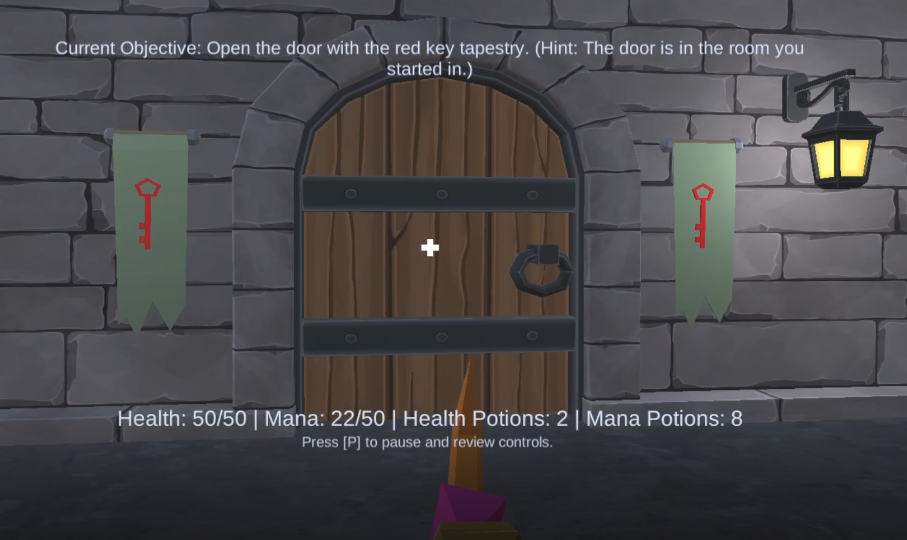
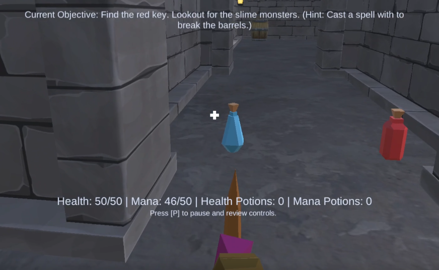

Quick Facts
- Type: 3D FPS
- Tools: Unity, C#
- Focus: Interactive items, enemies, UI systems
- Links: Itch.io build + design docs
Game Description
Wizard Rescue is a first-person game built in Unity and C#. Explore an interior castle, collect items, manage health/mana, and progress by unlocking doors and surviving enemies.
Design intent: Tight “dungeon run” loop — explore → collect → fight → unlock → repeat.
Walkthrough
Short gameplay walkthrough showing the core loop, mechanics, and level flow.
Highlights

Collectible Wands
Use unique collectible wands to cast spells and attack enemies.

Keys + Doors
Find keys to unlock castle doors and reach new areas.

Potions
Use potions to heal health and replenish mana.
World + Atmosphere
Interior environment with audio/FX supporting exploration and combat.
Assignment Requirements
Building Game Worlds (TECH 290)
- 1st person player character
- NPCs
- Interior environment
- Collection + interactive items
- Health, particles, background audio
Game Programming (TECH 225)
- Main menu scene
- Win/lose condition
- Ammo inventory
- Visible health
- Enemies chase player
- SFX for item pickup
- Pause menu